Las fechas, las cotizaciones, los contratos y los cobros de tu salón de eventos, quinta o hacienda, y todo lo del día del evento: cronograma, personal, proveedores e invitados.
Todo es por módulos: eliges lo que necesitas y pagas solo por eso.
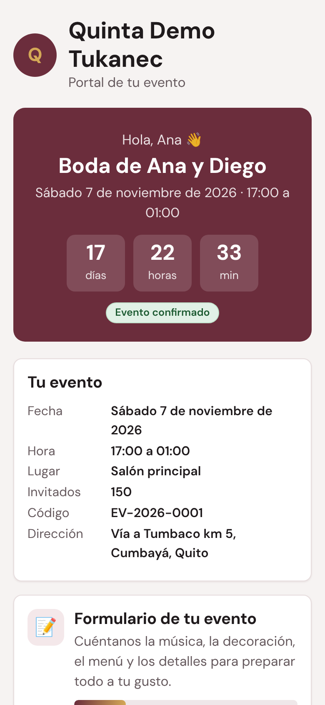
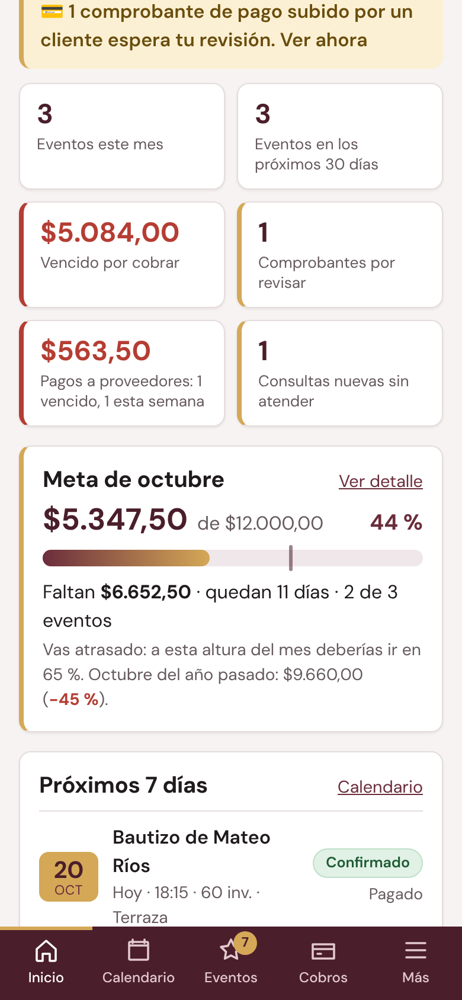
Capturas reales del local de ejemplo Quinta Demo Tukanec.
WhatsApp de Tukán 099 640 8397
info@tukansoftware.com · tukansoftware.com
TuEvento es el sistema para salones de eventos, quintas y haciendas de Ecuador. Funciona en el celular, la tablet y la computadora, sin instalar nada: entras con tu correo y tu contraseña desde el navegador. Lleva cada evento desde que el cliente pregunta por una fecha hasta el día de la fiesta y después.
| Módulo | Para qué sirve |
|---|---|
| 🎁 Paquetes y simulador | Paquetes armados (Boda Oro, Quince años…) que cargan la cotización en un toque, con simulador por número de invitados |
| ✍️ Contratos con firma | Contrato con tu plantilla que el cliente firma con el dedo en su celular, con QR de verificación y anexos por extras |
| 📱 Portal del cliente | Un enlace propio del cliente, sin claves: sus pagos, su contrato, sus invitados y los comprobantes que sube |
| 💳 Cobros en línea (Payphone) | El cliente paga sus cuotas con tarjeta desde el portal (necesita el Portal del cliente) |
| 📝 Formulario, extras y encuesta | Formulario del evento, extras pedidos en línea y encuesta de satisfacción (necesita el Portal del cliente) |
| ⏱️ Día del evento | Cronograma con modo en vivo, personal con su propio enlace y hoja del evento en PDF |
| 🎟️ Invitados con QR | Lista, mesas, invitación digital con confirmación y control de ingreso con QR en la puerta |
| 🗺️ Plano del salón | Plano de cada espacio y de cada evento, unido a las mesas de los invitados |
| 🪑 Mobiliario y menaje | Sillas, mesas, mantelería y vajilla: cuánto se reserva, si alcanza y cuánto cobrar por lo dañado |
| 🎥 Boda en vivo | Transmisión con el botón «Ver en vivo» en el portal y en la invitación (necesita Día del evento) |
| 🚚 Proveedores y compras | Ficha del proveedor, órdenes de compra, facturas (también del XML del SRI), pagos y cuentas por pagar |
| 🔗 Portal del proveedor | Cada proveedor ve sus eventos, confirma órdenes, sube facturas y ve sus pagos (necesita Proveedores) |
| ⭐ Incidencias y puntaje de proveedores | Problemas de cada evento con foto, puntualidad y puntaje que tú configuras (necesita Proveedores) |
| 🎯 Metas y reportes avanzados | Metas de ventas del local y por vendedor, embudo, ganancia por evento y comisiones |
| 📲 Avisos por Telegram | Pagos, firmas, consultas nuevas, cuotas y seguimientos llegan solos al celular del equipo |
| 📤 Exportar a Excel y Google Calendar | Descargas para Excel y tus eventos en Google Calendar |
Quien todavía no tiene cuenta ve el enlace Solicitar demo.
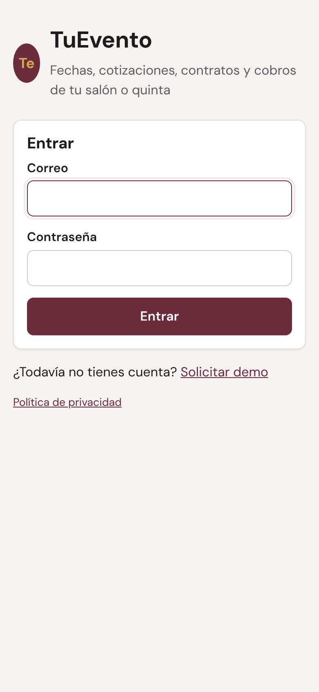
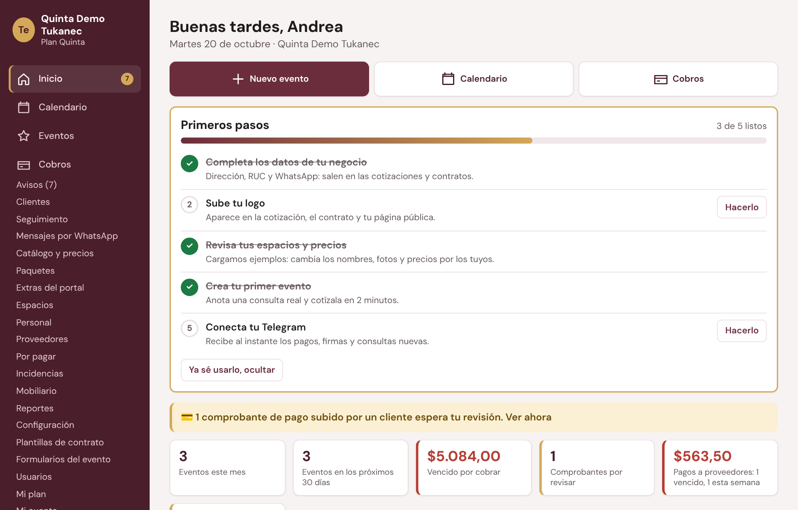
Al empezar, el Inicio te muestra una guía que se va tachando sola: Completa los datos de tu negocio, Sube tu logo, Revisa tus espacios y precios, Crea tu primer evento y Conecta tu Telegram. Cada paso tiene su botón Hacerlo. Cuando ya no la necesites, toca Ya sé usarlo, ocultar.
Cada persona entra con su propio correo y su contraseña. Lo que ve depende de su cargo:
| Cargo | Qué puede hacer | Qué no ve |
|---|---|---|
| Dueño | Todo: eventos, cotizaciones, contratos, cobros, reportes y metas, configuración, plantillas, formularios del evento, usuarios y Mi plan. Ve la ganancia de cada cotización. | — |
| Vendedor | Atiende consultas, cotiza, hace contratos y registra cobros. Ve clientes, seguimiento, mensajes, catálogo, paquetes, proveedores, por pagar y reportes. | Configuración, plantillas, usuarios, Mi plan, metas y la ganancia de las cotizaciones. |
| Coordinador | Ve los eventos y organiza el día: cronograma, personal, proveedores, invitados, mobiliario, plano y las respuestas del formulario. Le llega un aviso cuando le asignan un evento. | El dinero: no tiene Cobros, ni las pestañas Cotización, Contrato y Pagos. |
| Solo consulta | Ve todo (eventos, cobros, reportes). Ideal para el contador o un socio. | No puede cambiar nada. |
En cada persona puedes Cambiar su cargo, darle una Nueva contraseña o Desactivar su acceso.
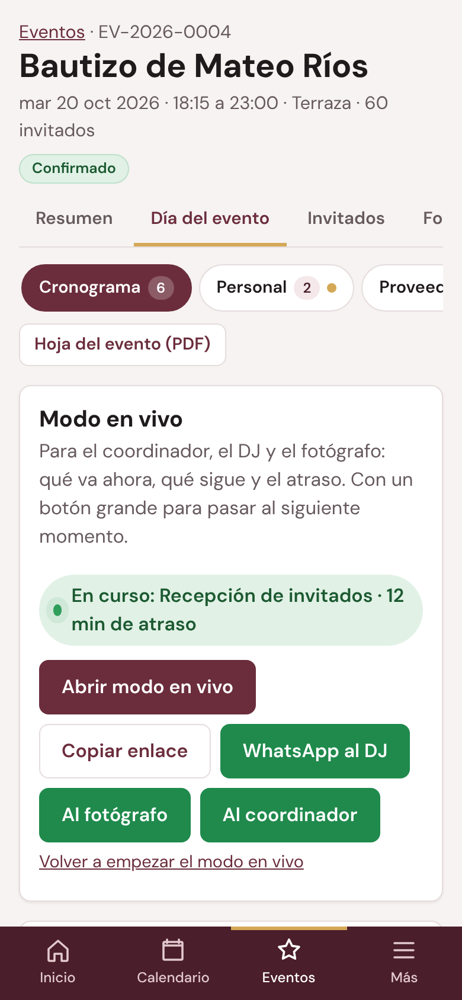
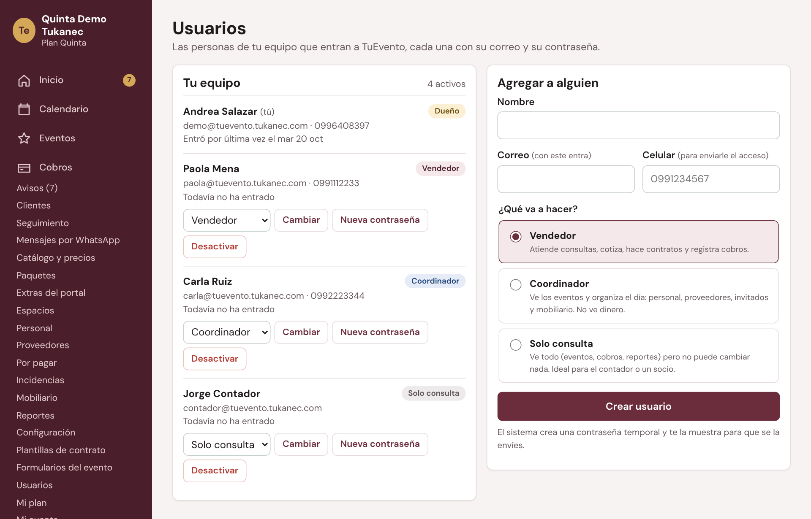
Cada persona, en Más → Mi cuenta, cambia su nombre y celular (Guardar mis datos) y su contraseña (Cambiar contraseña). Con el módulo Avisos por Telegram, ahí también conecta su Telegram para recibir al instante los pagos, firmas, consultas nuevas y su lista de seguimientos de cada mañana.
En Más → Configuración hay varias pestañas. Lo que pongas aquí sale en tus cotizaciones, contratos, recibos y en tu página pública.
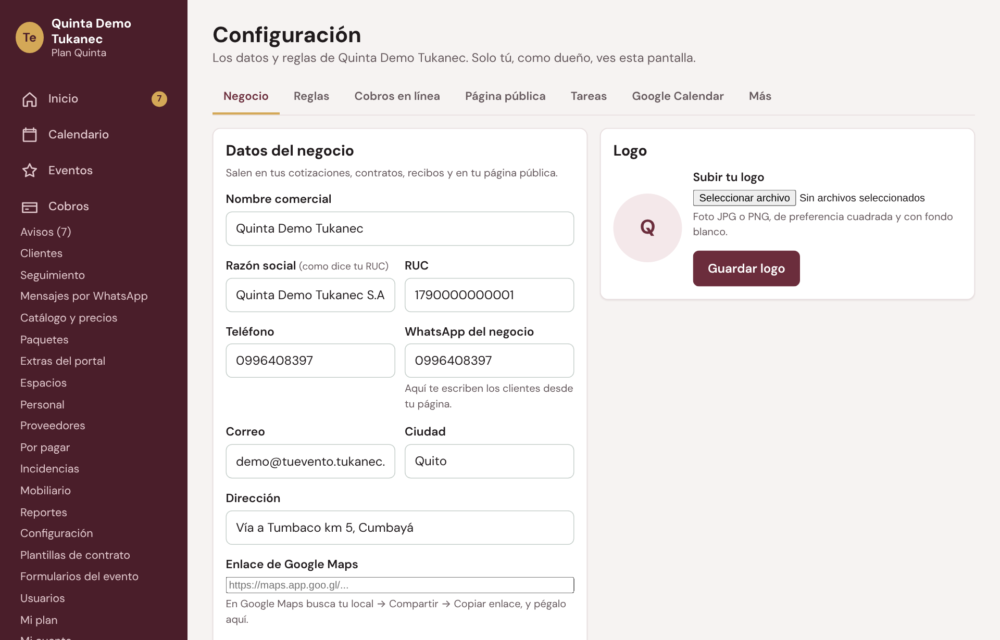
| Pestaña | Qué se configura |
|---|---|
| Negocio | Nombre comercial, razón social, RUC, teléfono, WhatsApp del negocio, correo, ciudad, dirección, enlace de Google Maps, Instagram, Facebook, el enlace para dejar reseña en Google, la descripción para tu página pública y el color de tu marca. Toca Guardar datos del negocio. Al lado, Subir tu logo y Guardar logo. |
| Reglas | IVA (%), días que vale una cotización, días que se retiene una fecha cotizada, reserva para separar la fecha (%), número de pagos, hasta cuántos días antes se paga el saldo, garantía por daños ($), hora máxima de fin, horas de montaje y de desmontaje, invitados por mesero, aviso para revisar el precio, comisión del vendedor (%) y las condiciones que salen en la cotización. |
| Cobros en línea | Cómo te pagan tus clientes: datos para transferencia y celular de DeUna (los ve el cliente en su portal). Si tienes el módulo Cobros en línea, aquí pegas el Token y el Store ID de Payphone; la pantalla explica dónde sacarlos. |
| Página pública | El enlace de tu página, los botones Copiar, Ver mi página y Compartir por WhatsApp, y el código QR para imprimir. |
| Tareas | La lista de tareas que se copia sola a cada evento nuevo (ej. «Degustación del menú con los novios», 60 días antes), por tipo de evento. |
| Google Calendar | Módulo Exportar: tu enlace secreto para ver tus eventos en Google Calendar, con el paso a paso, y Cambiar el enlace si alguien más lo vio. |
| Más | Acceso a las plantillas de contrato, el WhatsApp para transmisiones (boda en vivo), catálogo, paquetes, espacios, usuarios y Mi plan. |
Un espacio es lo que alquilas: salón, jardín, terraza, capilla… Cada uno se reserva por separado: nunca se vende dos veces el mismo a la misma hora. Tu demo trae dos de ejemplo (Salón principal y Jardín) para que los cambies por los tuyos.
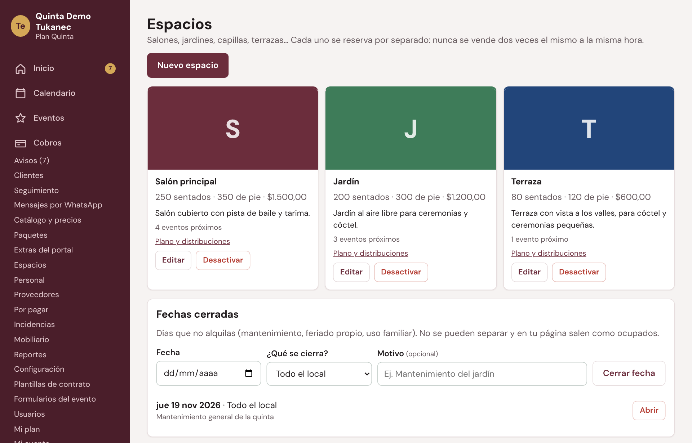
Los días que no alquilas (mantenimiento, feriado propio, uso familiar). Elige la Fecha, ¿Qué se cierra? (todo el local o un solo espacio), el motivo y toca Cerrar fecha. Esos días no se pueden separar y en tu página pública salen como ocupados. Para volver a abrirla, toca Abrir.
Con el módulo Plano del salón, en Más → Planos del salón (o en cada espacio, Plano y distribuciones) armas una vez cómo se acomoda cada espacio: toca Nueva distribución, ponle nombre y medidas en metros y elige cómo empezar: vacía, el ejemplo de boda o quince (mesas redondas, pista y tarima) o el ejemplo corporativo (mesas en filas mirando a la tarima). Después la usas en cada evento (capítulo 15).
El catálogo es todo lo que vendes: menús, bebidas, decoración, música, foto y video, mobiliario, personal, transmisión… Con él armas paquetes y cotizaciones en segundos. Tu demo trae un catálogo de ejemplo.
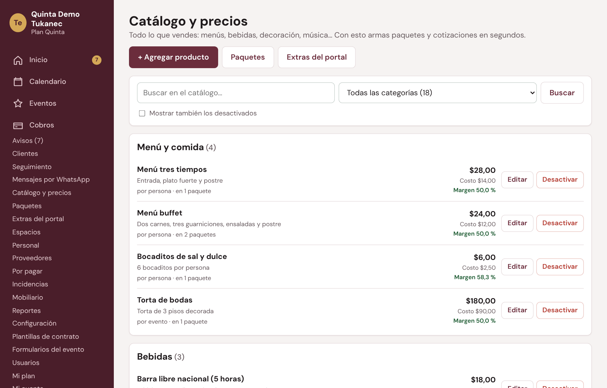
Módulo Paquetes y simulador. En Más → Paquetes juntas productos del catálogo en paquetes listos (Boda Oro, Quince años…) con su precio dentro del paquete y el mínimo de invitados. Toca + Crear paquete; en cada uno tienes Editar, Duplicar, Desactivar y ¿Cuánto sale?, que calcula el precio para un número de invitados y te deja copiar la respuesta para el cliente.
Módulo Formulario, extras y encuesta. En Más → Extras del portal marcas qué productos puede pedir el cliente solo desde su portal (hora adicional, hora loca, mesero adicional…), con un texto corto y una foto. Los pedidos te llegan para aprobarlos (capítulo 13).
En el Calendario ves cada mes con sus eventos en el color de su estado. Puedes ver Todos los espacios o uno solo. Toca un día para ver qué espacios están libres. La vista Próximos sábados te dice al instante qué sábados te quedan libres.
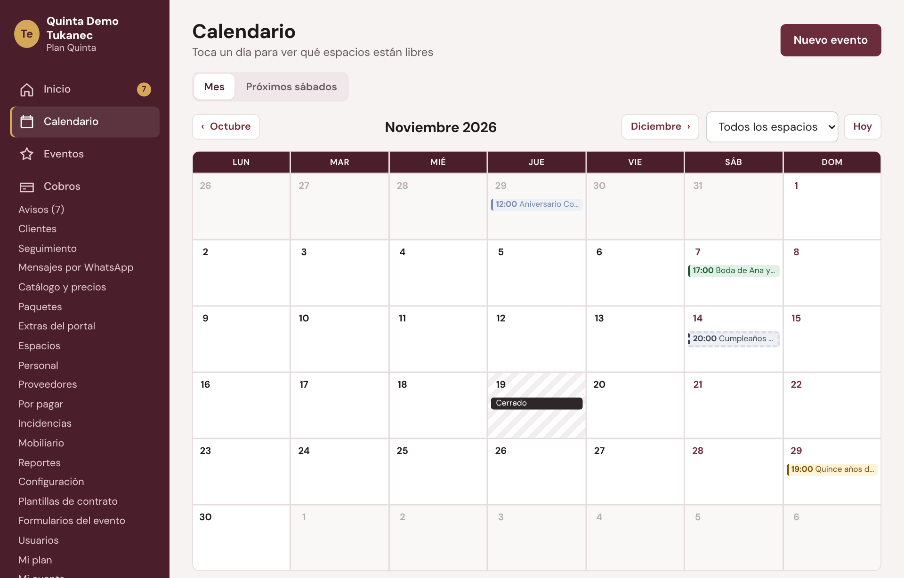
| Estado | Qué significa |
|---|---|
| Consulta | El cliente preguntó. La fecha no está guardada. |
| Cotizado | Ya tiene cotización. La fecha queda retenida unos días, sin bloquearla. |
| Separado | Pagó la reserva: la fecha y el espacio quedan bloqueados. |
| Confirmado | Contrato firmado. El evento va. |
| Realizado | El evento ya pasó. |
| Perdido / Cancelado | El cliente no contrató / se canceló después de separar (con el motivo). |
Con nombre, celular y fecha basta para empezar: el evento nace como Consulta y lo demás se completa después.
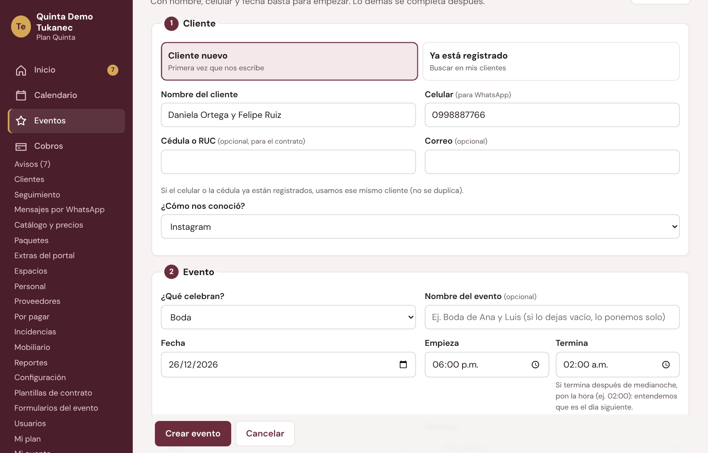
En Eventos buscas y filtras por tipo, vendedor, fechas y estado, con lo vendido, lo cobrado y lo que falta cobrar. La vista Tablero de ventas muestra tus ventas en camino, de la consulta a la confirmación, con el valor de cada columna.
Al abrir un evento ves arriba su código (EV-año-número), la fecha, el horario, el espacio, los invitados y el estado. Debajo, las pestañas: Resumen, Cotización, Contrato, Pagos, Día del evento, Invitados, Formulario y extras y Plano. Las de un módulo que no tienes no salen.
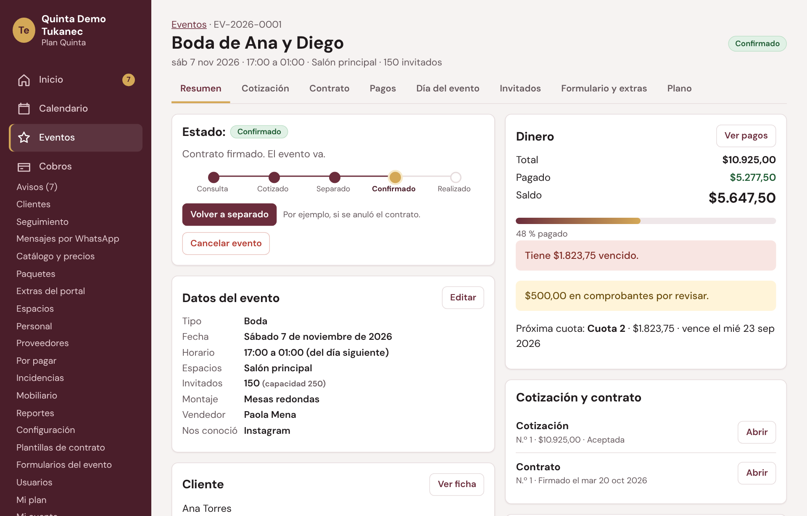
En Más → Seguimiento ves a quién llamar, escribir o recibir: Atrasadas, Para hoy y Próximos 7 días, cada una con Hecho, WhatsApp, Llamar y Reagendar. Puedes ver Todo el equipo o Solo lo mío. A la derecha: Consultas sin atender (nadie les escribió en 3 días), Cotizaciones sin respuesta (con Preguntar) y Fechas retenidas que vencen.
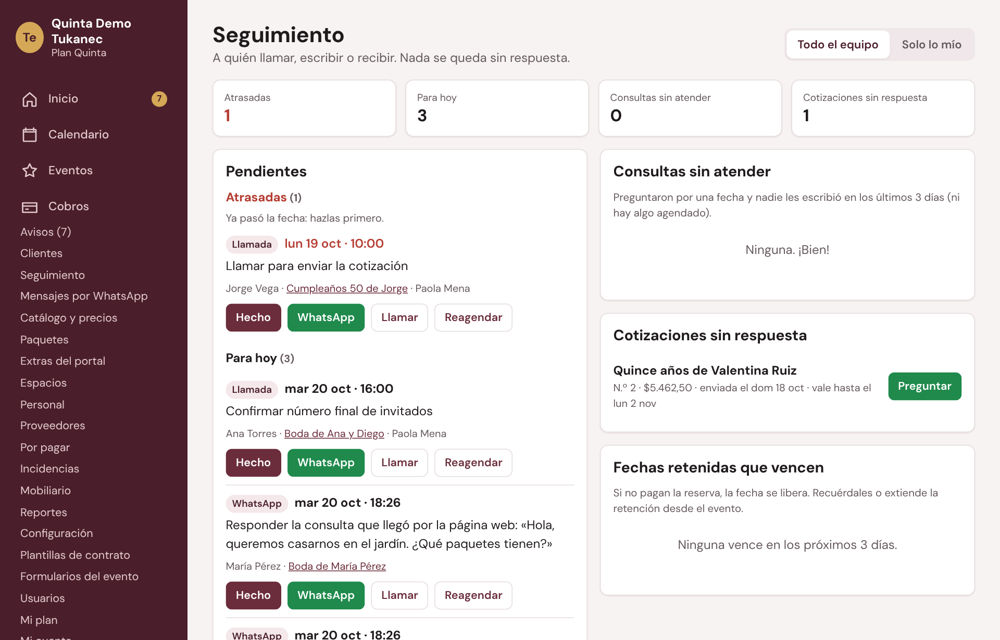
En Más → Mensajes por WhatsApp TuEvento te deja listos los mensajes del día: cuotas que vencen o ya vencieron, pedir la lista de invitados, formularios del evento sin llenar, contratos por firmar y la encuesta después del evento, entre otros. Toca Enviar por WhatsApp, revisa el texto y mándalo; después toca ✓ Marcar como enviado.
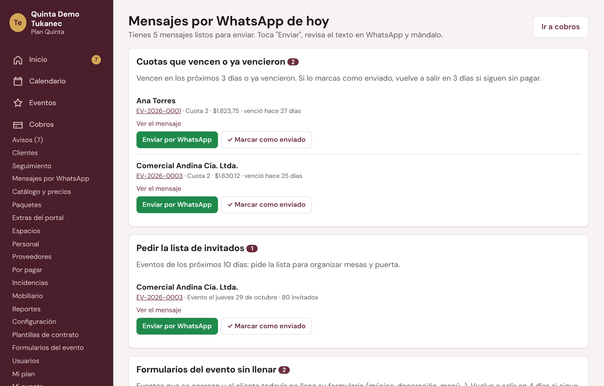
Los clientes se agregan solos al crear eventos o al llegar consultas de tu página. En Más → Clientes buscas a cualquiera; en su ficha ves sus eventos, cuánto contrató, pagó y debe, editas sus datos (con Guardar ficha) y anotas su seguimiento.
Tu local tiene su propia página para Instagram, Facebook y WhatsApp (el enlace está en Configuración → Página pública). Ahí el cliente ve tus espacios, consulta ¿Está libre tu fecha? y llena Pide información.
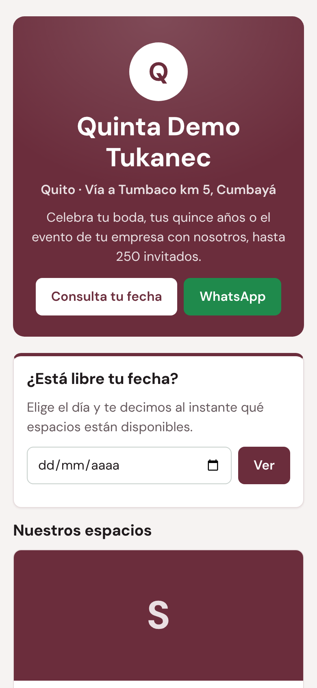
Arriba de la pestaña Cotización ves los 4 pasos: Armar → Enviar al cliente → El cliente acepta → Contrato.
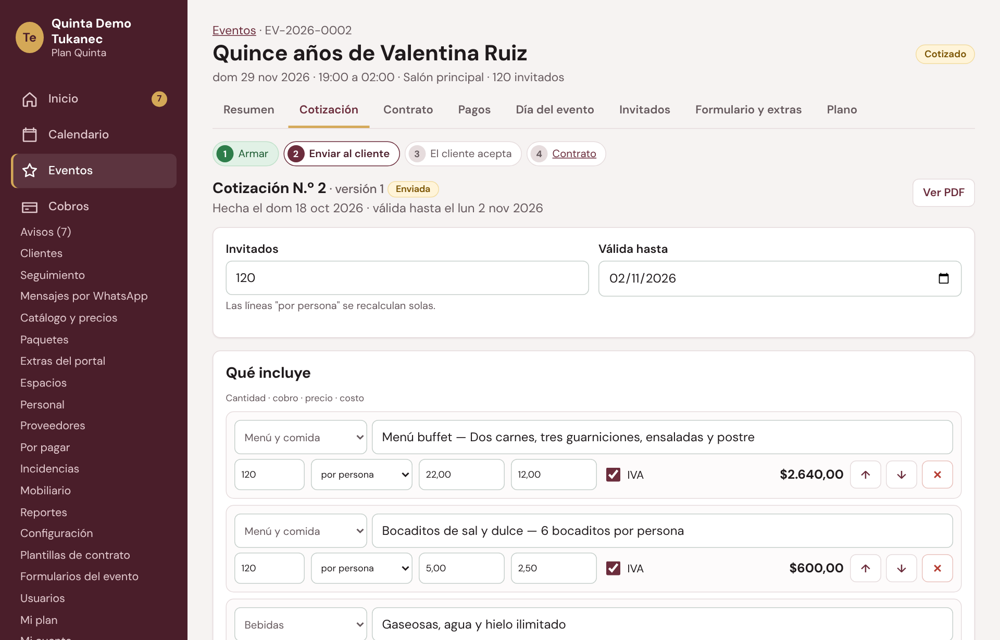
A la derecha ves los totales: subtotal, descuento, IVA, total, por persona y, solo para el dueño, la ganancia y el margen.
Al aceptarla, el evento toma ese valor y se arma solo su plan de pagos (capítulo 12).
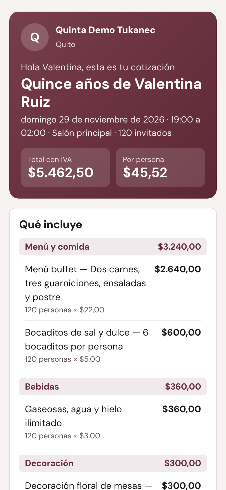
El contrato se llena solo con los datos del cliente, del evento, lo contratado y el plan de pagos. Sale de tu plantilla.
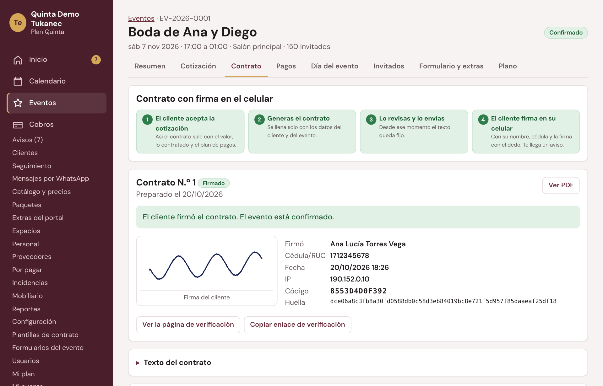
En Más → Plantillas de contrato (solo el dueño) editas el texto base. Las variables como {{cliente}} se llenan solas. Tienes Vista previa (con datos de ejemplo), Editar y Restaurar la de fábrica. Los contratos ya generados no cambian al editar una plantilla.
Si apruebas extras que el cliente pidió desde su portal y el contrato ya estaba firmado, se prepara solo un anexo con los extras, su valor, el nuevo total y la cuota nueva, para que el cliente lo firme también con el dedo.
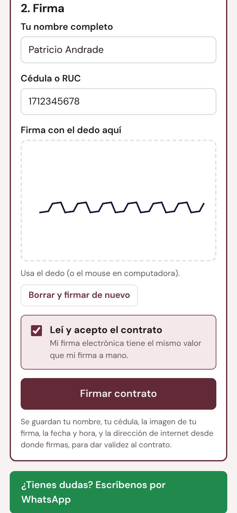
Cuando el cliente acepta la cotización se arma el plan de pagos con tus reglas: la reserva (el % que pusiste), las cuotas y el saldo, que vence los días antes del evento que elegiste. Lo ves en la pestaña Pagos del evento: cada pago con su fecha, lo pagado, lo que falta y si está pagada, pendiente o vencida.
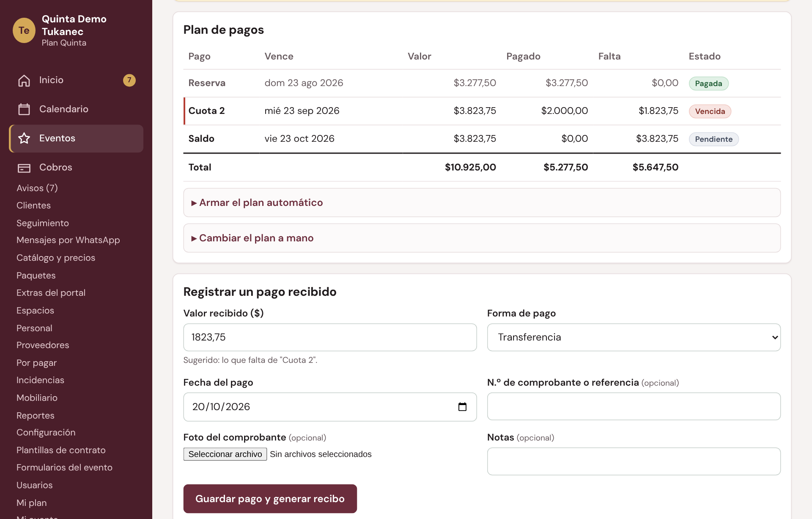
En Cobros ves lo cobrado este mes y el anterior, el total por cobrar, lo vencido, los comprobantes por revisar, las cuotas vencidas y las que vencen en 7, 15 o 30 días (cada una con WhatsApp, Ver evento y Registrar pago) y las garantías por devolver.
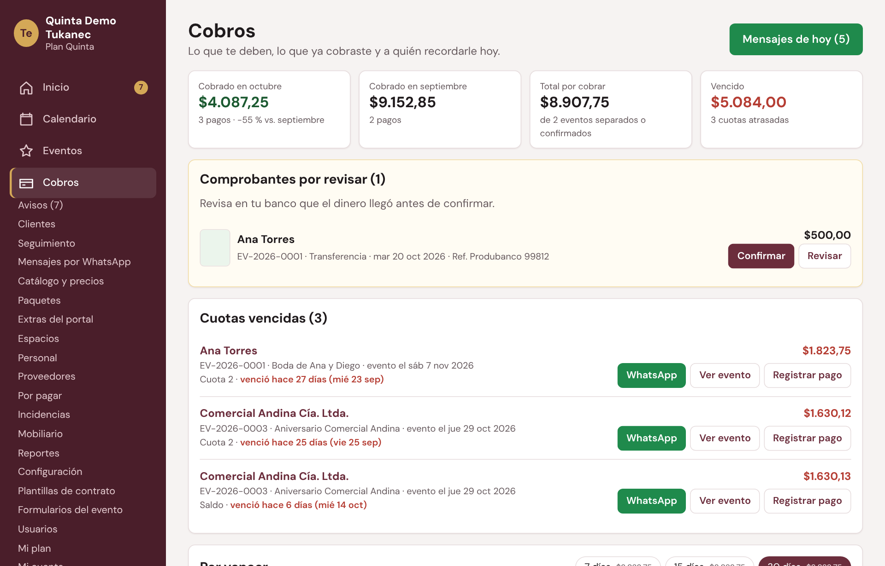
Cada evento tiene un enlace secreto para el cliente, sin usuario ni contraseña. Lo mandas desde el Resumen o la pestaña Pagos con Enviar por WhatsApp. Ahí el cliente ve:
Las preguntas que el cliente responde desde su portal: ceremonia, música, momentos especiales, decoración, comida, invitados, proveedores y el día del evento. Hay un formulario por tipo de evento que editas en Más → Formularios del evento (solo el dueño): preguntas de texto, una opción, varias opciones, sí o no, número, fecha u hora, y si son obligatorias.
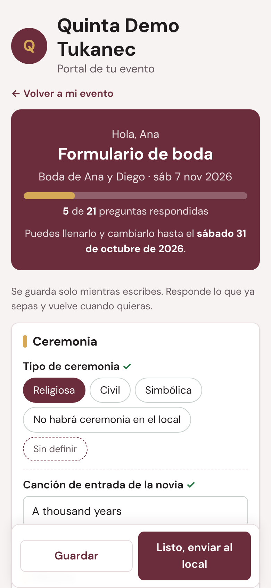
El cliente elige en su portal los extras que ofreces (cantidad y nota) y toca Enviar pedido al local. No paga nada todavía. Tú lo ves en la pestaña Formulario y extras y en Más → Extras del portal:
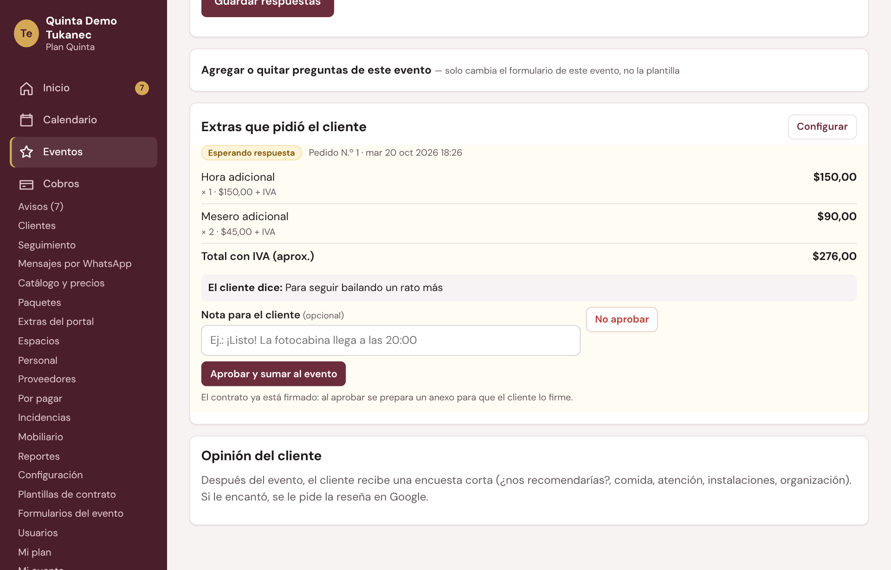
Después del evento, el cliente recibe una encuesta corta: ¿nos recomendarías? (de 0 a 10), la comida, la atención, las instalaciones y la organización. A quien le encantó se le pide la reseña en Google (con el enlace de Configuración → Negocio); si la nota es baja, al dueño le llega un aviso para llamarle. Los resultados están en Reportes → Satisfacción.
La pestaña Día del evento tiene secciones: Cronograma, Personal, Proveedores, Incidencias, Mobiliario, Montaje y menú y Boda en vivo, más el botón Hoja del evento (PDF) para imprimir y repartir al equipo.
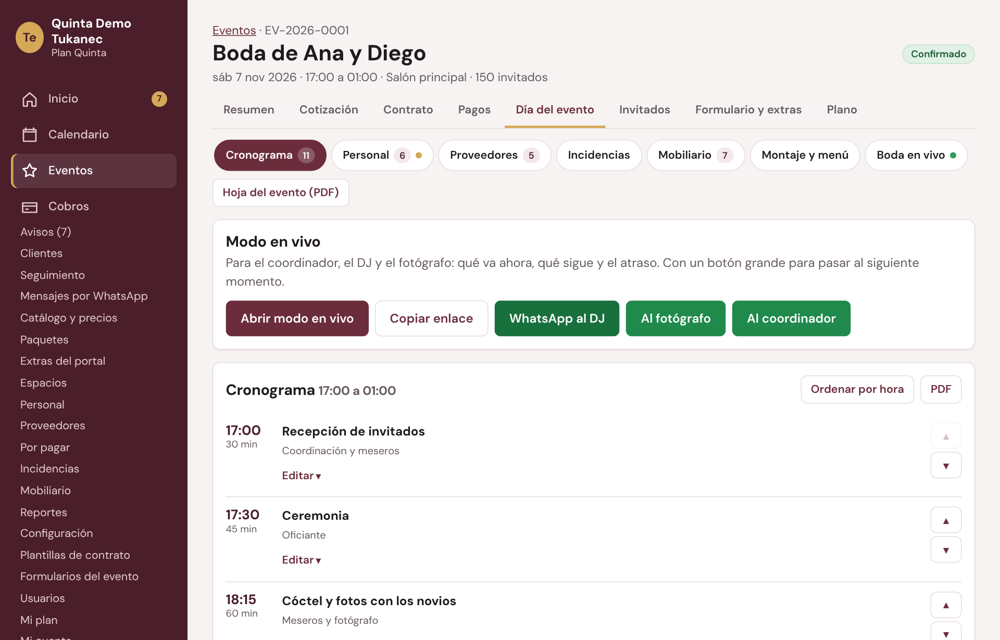
Para el coordinador, el DJ y el fotógrafo: toca Abrir modo en vivo o mándales el enlace (WhatsApp al DJ, Al fotógrafo, Al coordinador). En el celular ven qué va ahora, qué sigue y el atraso, con un botón grande para empezar el siguiente momento. Se actualiza solo.
En Más → Personal registras a tus meseros, capitanes, cocina, bartenders, seguridad y más, con lo que les pagas por evento. En el evento los asignas con su horario; TuEvento te avisa si faltan meseros según los invitados. Marcas quién Confirmó, Asistió y si ya está Pagado.
Cada persona tiene su enlace: ve sus eventos, a qué hora llega y sale, qué hace, cuánto gana, confirma que va y ve sus pagos.
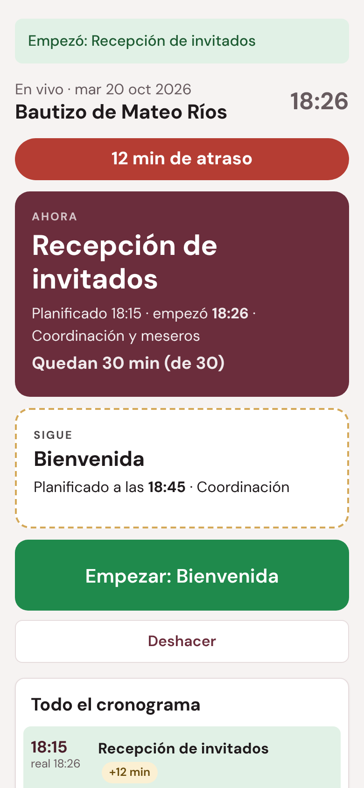
Módulo Proveedores y compras. Los proveedores del evento con su hora de llegada, la orden de compra y su saldo, y los que trae el cliente. Marcas si Confirmó, la hora en que llegó (para la puntualidad) y, con Evaluar, si cumplió y sus estrellas. También puedes Reportar un problema.
Módulo Mobiliario y menaje. Para cada evento escribes cuántas sillas, mesas, manteles, platos y copas usas. «Libres ese día» ya descuenta lo que reservaron otros eventos de la misma fecha, así sabes si alcanza. Después del evento anotas los dañados o perdidos y TuEvento calcula cuánto cobrar con el costo de reposición. Tu inventario está en Más → Mobiliario.
Montaje y menú junta el montaje, el menú elegido, lo que pidió el cliente y la comida especial de los invitados. Boda en vivo (módulo) guarda el estado de la transmisión (pedida a QF Producciones o confirmada) y su enlace, que aparece en el portal y en las invitaciones con el botón «Ver en vivo».
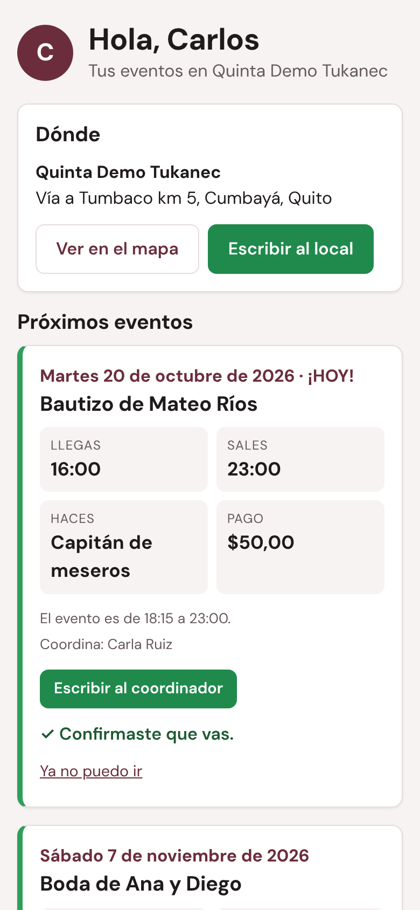
En la pestaña Invitados armas la lista, las mesas y mandas las invitaciones. Arriba ves cuántos invitados, pases, confirmados, no asisten y pendientes.
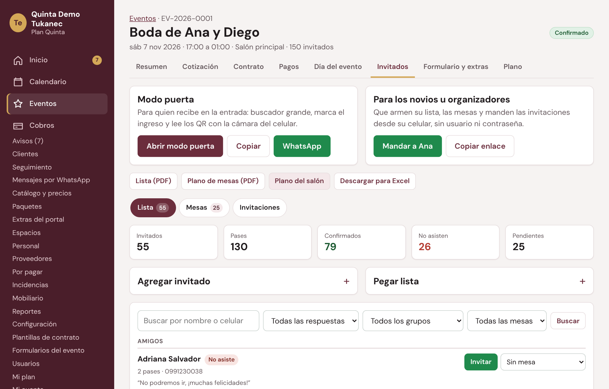
Cada invitado recibe su enlace con la fecha, la hora, el lugar, el mapa y su mesa. Confirma cuántas personas van (hasta sus pases) y su comida especial. Al confirmar recibe su código QR, que es su entrada.
Con Mandar a (el nombre del cliente) le envías un enlace para que arme su lista, sus mesas y mande las invitaciones desde su celular, sin usuario ni contraseña.
Para quien recibe en la entrada: Abrir modo puerta (o mándale el enlace). Tiene un buscador grande, marca el ingreso y lee los QR con la cámara del celular. Arriba cuenta cuántos ingresaron.
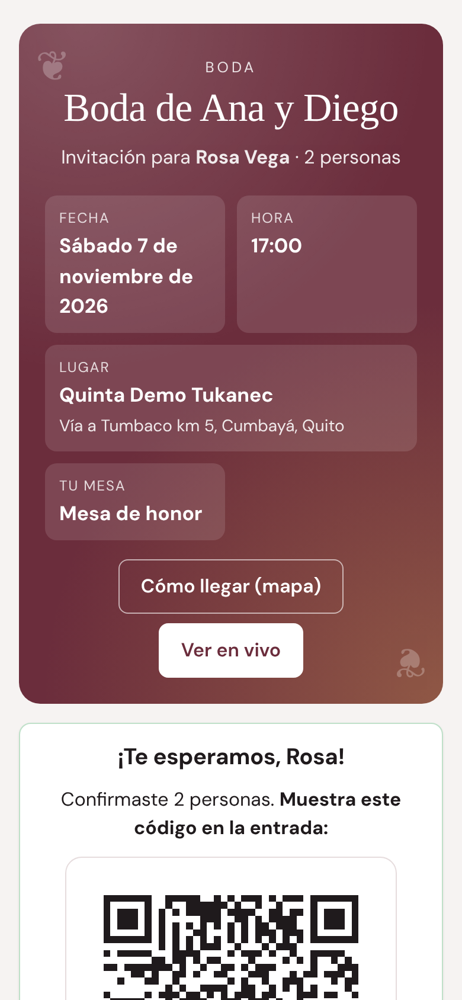
En la pestaña Plano eliges una distribución del espacio (capítulo 5) o empiezas desde cero con las medidas. Toca Agregar para poner mesas redondas, rectangulares o imperiales, pista, tarima, barra, buffet, dulces, DJ, entrada, baños, columnas o texto. Arrastra cada cosa con el dedo o el mouse; tócala para cambiarle el nombre, los puestos o girarla. Se guarda solo.
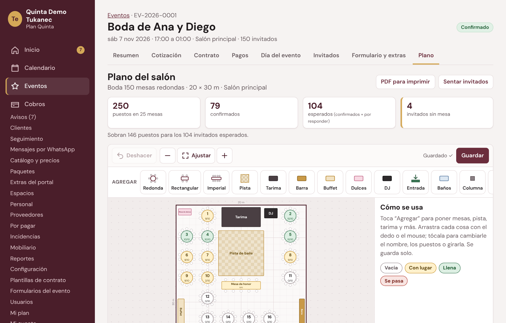
En Más → Proveedores están tus DJ, fotógrafos, florerías, catering y más: lo que les compras, lo que les debes, sus documentos y cómo cumplen. Para agregar uno, llena Agregar proveedor (nombre, servicio, contacto, celular, correo y, si quieres, RUC, cuenta del banco y crédito).
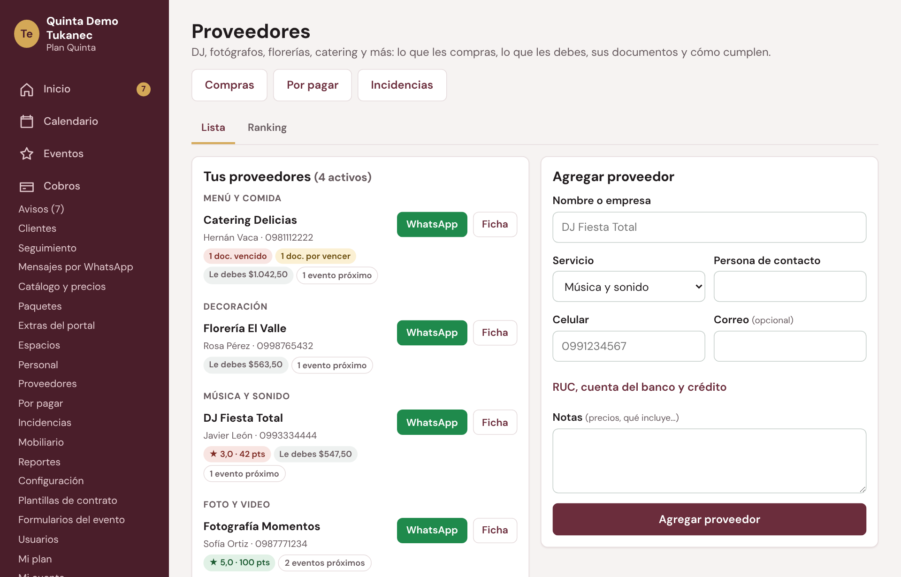
Pestañas: Resumen, Cuenta, Eventos, Documentos, Precios, Incidencias y Bitácora (todo lo que pasó con él). Tienes WhatsApp, Nueva compra, Estado de cuenta (PDF), Editar datos, Reportar problema y, para transferirle, Copiar datos de su banco. En Documentos subes su RUC, permisos, ARCSA o póliza con la fecha en que vencen: TuEvento te avisa antes.
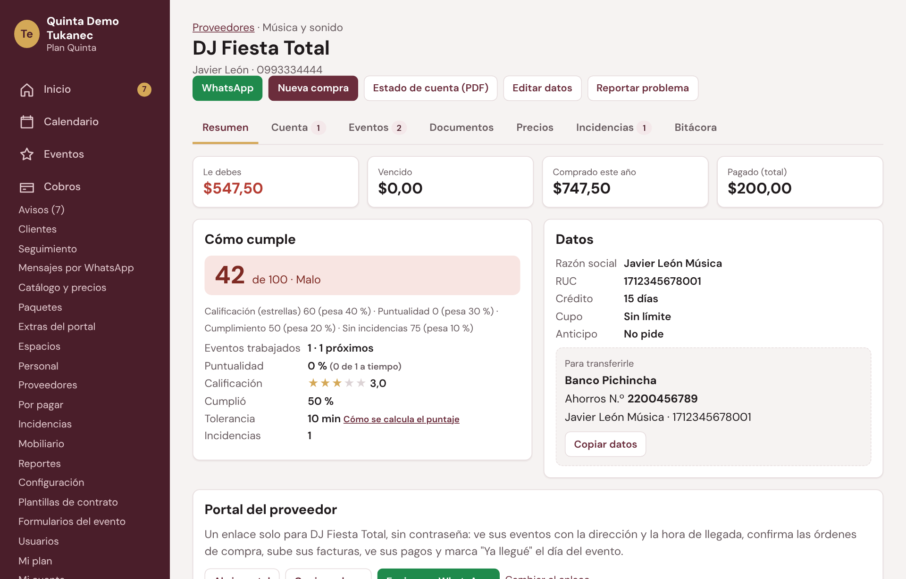
En Más → Por pagar: el total que debes, lo vencido, lo que vence esta semana, los cheques por cobrar, los próximos pagos, la antigüedad de saldos y lo que debes a cada proveedor, con Descargar para Excel.
Módulo aparte. Cada proveedor tiene un enlace sin contraseña: ve sus eventos con la dirección y la hora de llegada, confirma las órdenes de compra, sube su factura, ve sus pagos y su saldo y marca «Ya llegué» el día del evento.
Módulo aparte. En Más → Incidencias reportas un problema (qué pasó, gravedad, área, proveedor, quién lo resuelve y foto) y lo sigues hasta resolverlo; puede llevar costo y descuento al proveedor. El puntaje de cada proveedor junta calificación, puntualidad, cumplimiento e incidencias; en Cómo se calcula el puntaje el dueño cambia los pesos y ve una vista previa.
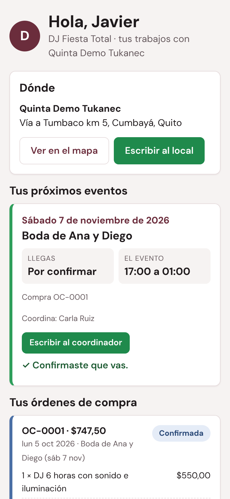
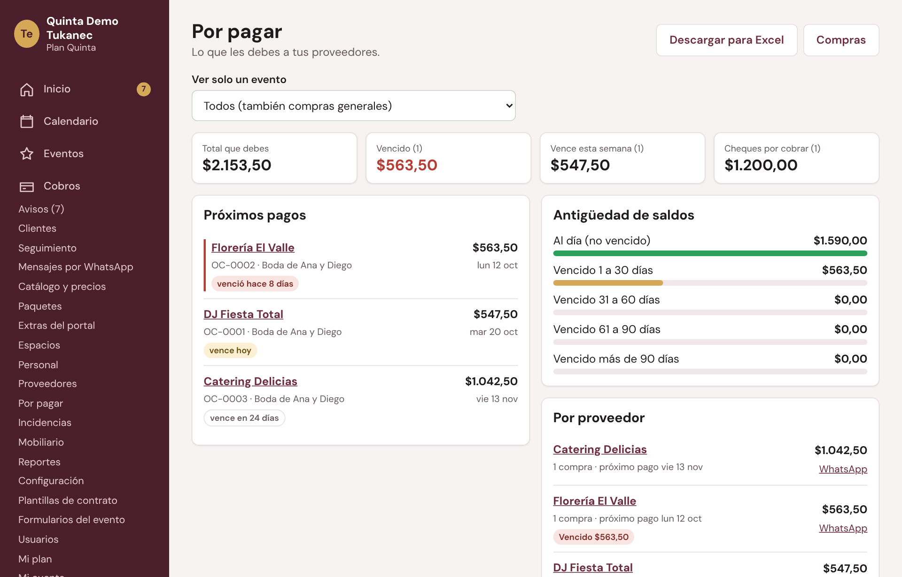
En Más → Reportes eliges el periodo (Este mes, Mes pasado, Este año u Otras fechas) y la sección. Arriba ves lo vendido, lo cobrado, lo que falta cobrar, la conversión, el ticket promedio, el precio promedio por invitado y los sábados vendidos.
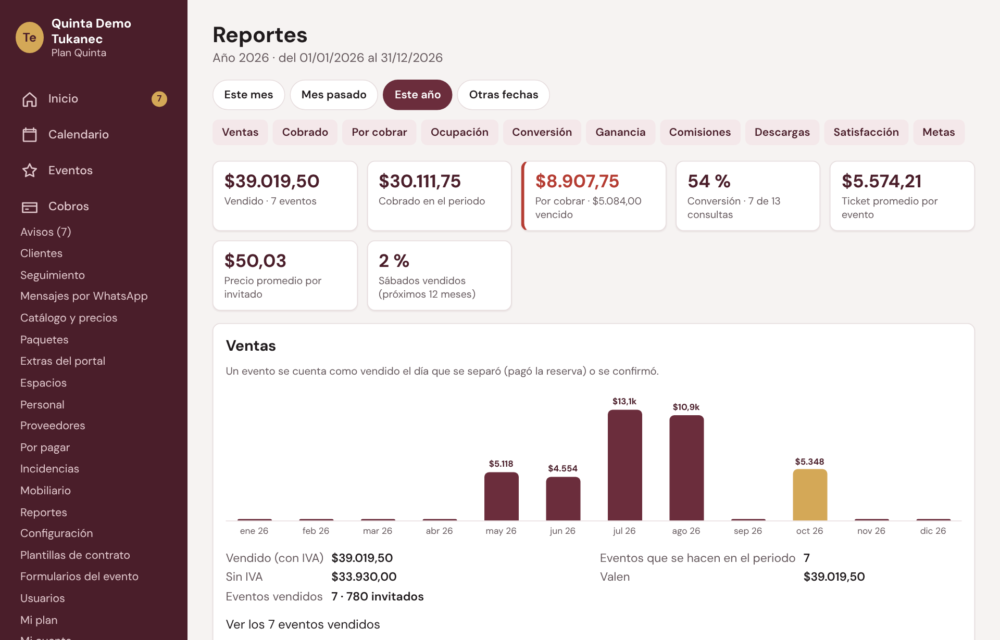
| Sección | Qué muestra |
|---|---|
| Ventas | Lo vendido por mes (un evento cuenta como vendido el día que se separó o se confirmó), sin IVA, eventos e invitados. |
| Cobrado · Por cobrar | Los pagos por mes y lo que falta pagar de cada evento, con lo vencido. |
| Ocupación | Sábados vendidos por mes de los próximos 12 meses y por espacio. |
| Conversión | El embudo (consultas, cotizadas, vendidas) por cómo llegaron, por tipo de evento y por vendedor, y por qué se pierden. |
| Ganancia | De cada evento del periodo: lo cobrado sin IVA, menos gastos, compras y personal. |
| Comisiones | La comisión de cada vendedor (el % se pone en Configuración → Reglas). |
| Satisfacción | El NPS, las estrellas y lo que dicen los clientes en la encuesta. |
| Metas | Lo vendido contra la meta, por mes y por vendedor, y contra el año anterior. |
| Descargas | Archivos para Excel: eventos, pagos recibidos, clientes, cuotas por cobrar y gastos. |
En Más → Metas de ventas (solo el dueño) pones la meta del local de todos los meses (en dólares con IVA y, si quieres, en eventos), una meta distinta para un mes (por ejemplo diciembre) y la meta de cada vendedor. El avance sale en el Inicio de cada uno.
En Más → Mi plan ves tu plan, hasta cuándo está pagado y tus módulos, agrupados en Ventas y contratos, Portal del cliente, Día del evento, Proveedores y gestión, y Avisos y conexiones. Cada uno dice si está encendido e incluido en tu plan.
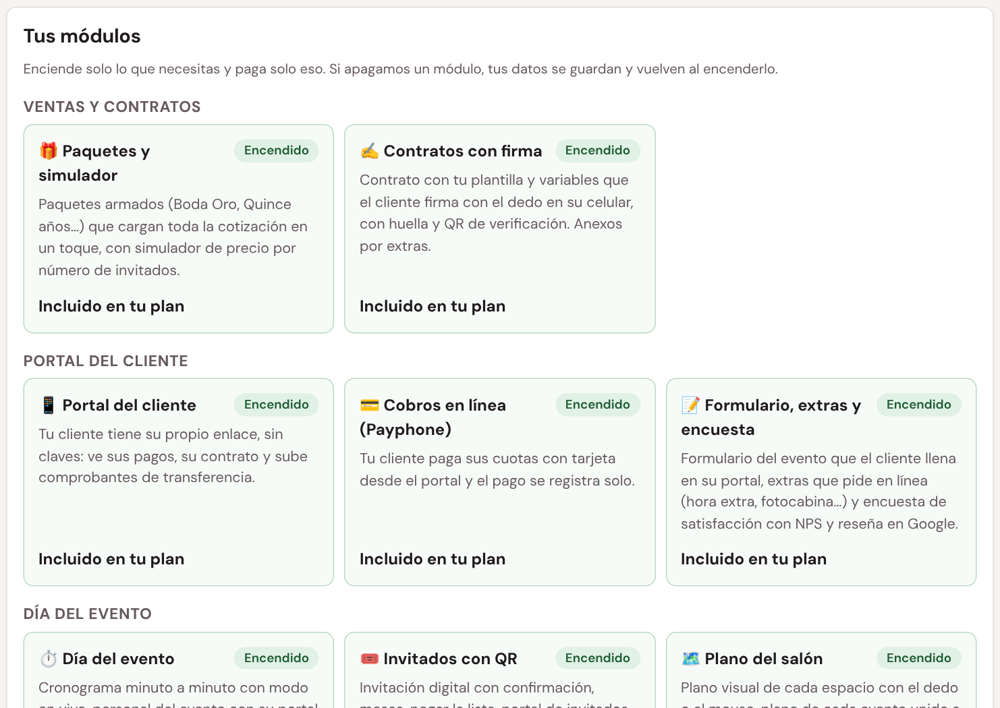
No. Un espacio separado o confirmado no se puede volver a separar en el mismo horario (con montaje y desmontaje): lo impide la base de datos. Lo que sí puede haber son varias consultas o cotizaciones para la misma fecha; la primera que paga la reserva se queda con ella.
Cuando lo pagado completa la reserva. Mientras está cotizada, la fecha solo queda retenida unos días (los que pusiste en Reglas). Para darle más tiempo al cliente, en el Resumen del evento elige los días y toca Retener.
Todavía no. Revisa en tu banco que el dinero llegó y toca Confirmar: el dinero llegó en Cobros o en la pestaña Pagos. Recién ahí suma a lo pagado.
Toca Anular en ese pago y escribe el motivo. No se borra: queda en el historial para que las cuentas cuadren.
Haz una Nueva versión. Si ya hay contrato firmado y el cambio es importante, anula el contrato y genera uno nuevo. Si solo suma extras pedidos desde el portal, al aprobarlos se prepara un anexo.
No. El coordinador organiza el día (cronograma, personal, proveedores, invitados, mobiliario y plano) pero no ve Cobros, ni la cotización, el contrato o los pagos.
Pídele al dueño que en Usuarios te dé una Nueva contraseña. Si eres el dueño, escríbenos por WhatsApp.
No. TuEvento hace cotizaciones, contratos, recibos y estados de cuenta. Sí lee el XML de las facturas que te mandan tus proveedores.
Necesita internet, pero funciona con los datos del celular. Instálalo como app para abrirlo más rápido.
No. Se esconden sus pantallas, botones y enlaces, pero los datos quedan guardados y vuelven al encenderlo.
Depende de los módulos que necesite tu local. Escríbenos y te mandamos la cotización.